#1 · ONDSUSDT · QB · W2026-08-20 11:00 → 08-20 16:00
-0.90%
entry 8.92 stop 8.60411 (−3.54%) target 9.55178 (2.0R) exit 8.84 lost_ma25 破底 8.63 深度 3.65% 在下 17h 量比 0.33x MA25 8.9168
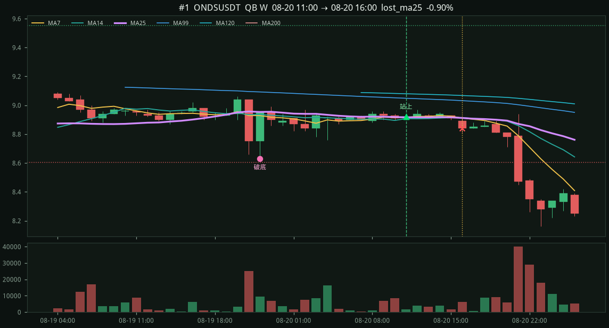
近 14 天 · 掃 80 檔 U 本位永續 · 粉線 MA25
價先收在 MA25 下至少 10 小時、深度 ≥ 2.8%（對照波段內最高 MA25），低點須是近 16 根最低。W 中間 1–2 根假站上不算結束。停損破底低點，目標 2R，連兩根掉回 MA25 下出場。
卡片 47 筆：AVGO/ONDS 等樣本 + 近 72 小時。
QA 53筆 +166.68% · QB 108筆 +218.47% · QC 16筆 +73.51%
漏斗：跌破 801 → 站回 177 → 進場 177（太短 385 · 太長 65 · 太淺 109 · 未站回 59）
entry 8.92 stop 8.60411 (−3.54%) target 9.55178 (2.0R) exit 8.84 lost_ma25 破底 8.63 深度 3.65% 在下 17h 量比 0.33x MA25 8.9168

entry 8.42 stop 8.13552 (−3.38%) target 8.98896 (2.0R) exit 8.53 lost_ma25 破底 8.16 深度 8.48% 在下 27h 量比 1.42x MA25 8.4144
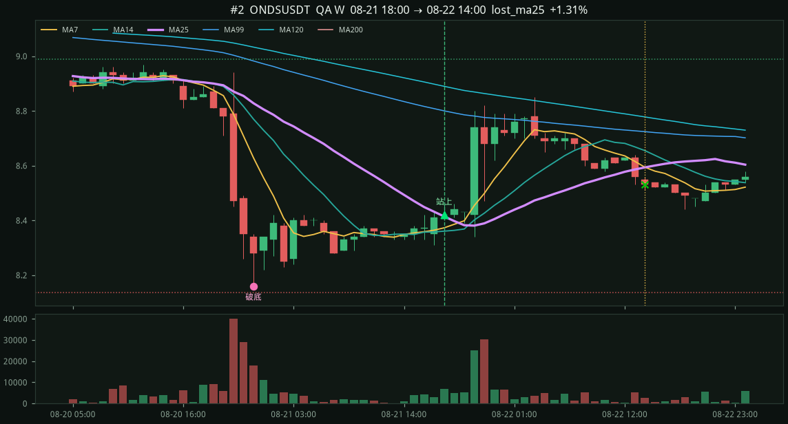
entry 2414.8 stop 2348.31 (−2.75%) target 2547.77 (2.0R) exit 2473.38 timeout 破底 2355.38 深度 4.06% 在下 28h 量比 0.60x MA25 2413.92
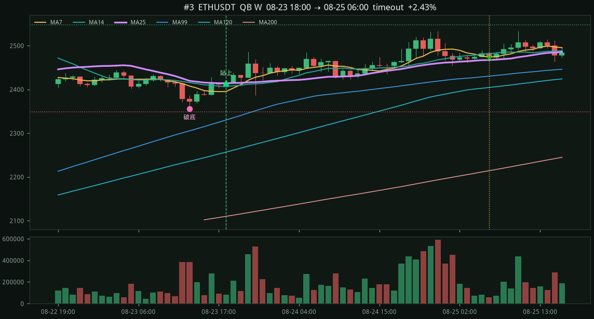
entry 695.39 stop 675.258 (−2.90%) target 735.654 (2.0R) exit 704.67 timeout 破底 677.29 深度 3.18% 在下 14h 量比 0.95x MA25 692.976
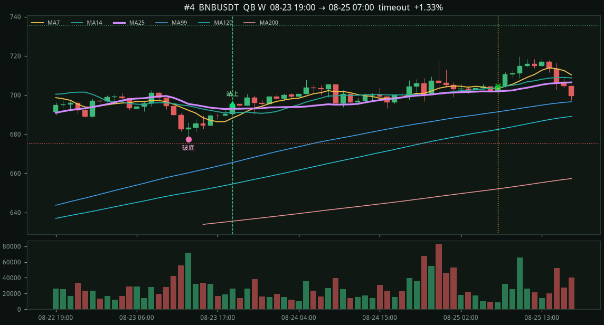
entry 361.69 stop 356.447 (−1.45%) target 372.175 (2.0R) exit 356.447 stop 破底 357.52 深度 3.24% 在下 33h 量比 0.54x MA25 361.658
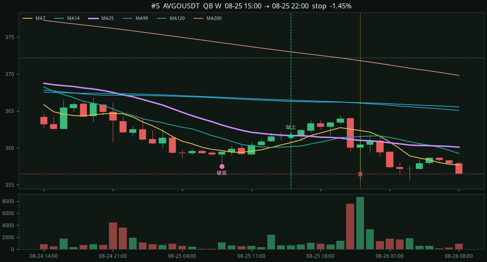
entry 8.348 stop 8.17739 (−2.04%) target 8.68921 (2.0R) exit 8.17739 stop 破底 8.202 深度 6.02% 在下 31h 量比 0.66x MA25 8.3324
entry 49.93 stop 46.5599 (−6.75%) target 56.6702 (2.0R) exit 48.19 lost_ma25 破底 46.7 深度 7.20% 在下 21h 量比 1.09x MA25 48.6608
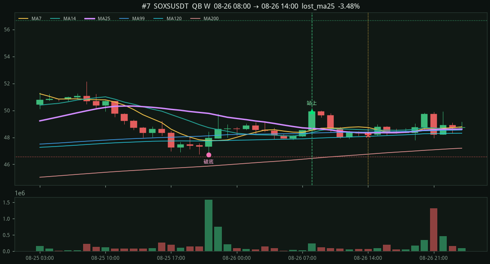
entry 0.21915 stop 0.205382 (−6.28%) target 0.246686 (2.0R) exit 0.246686 target 破底 0.206 深度 7.17% 在下 15h 量比 0.56x MA25 0.218227
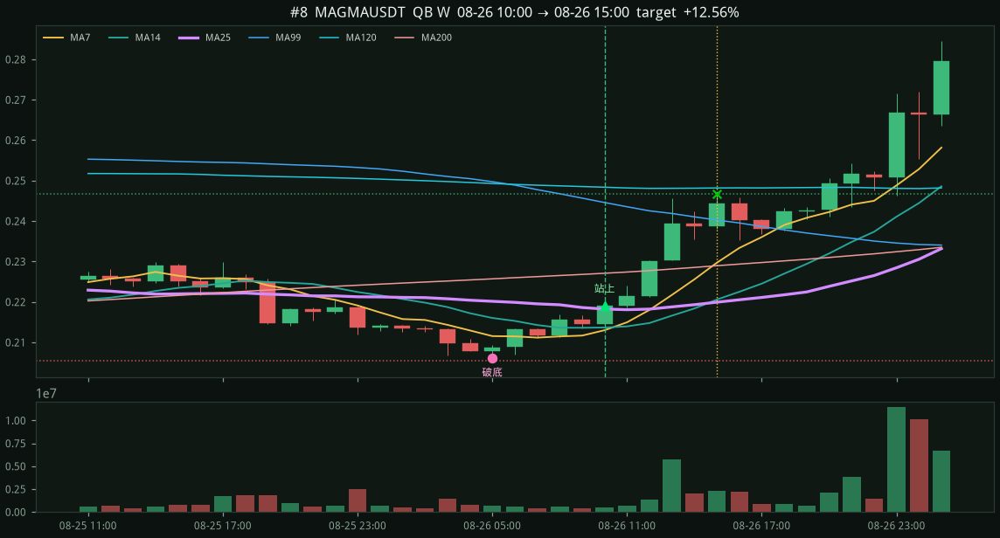
entry 443.68 stop 425.779 (−4.03%) target 479.482 (2.0R) exit 440.24 lost_ma25 破底 427.06 深度 3.90% 在下 11h 量比 0.32x MA25 443.636
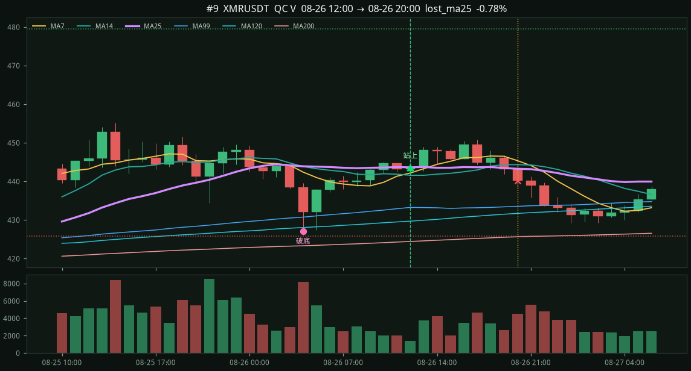
entry 0.3935 stop 0.373875 (−4.99%) target 0.43275 (2.0R) exit 0.3844 lost_ma25 破底 0.375 深度 7.45% 在下 25h 量比 0.78x MA25 0.392816
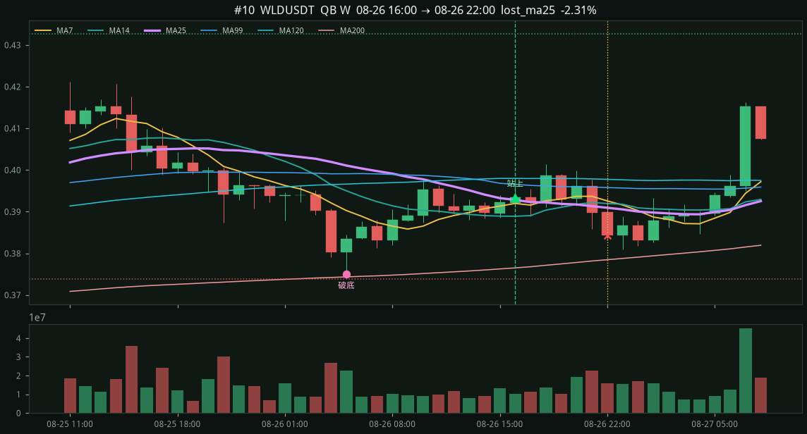
entry 0.007902 stop 0.00753433 (−4.65%) target 0.00863734 (2.0R) exit 0.007674 lost_ma25 破底 0.007557 深度 4.03% 在下 19h 量比 0.84x MA25 0.00782956
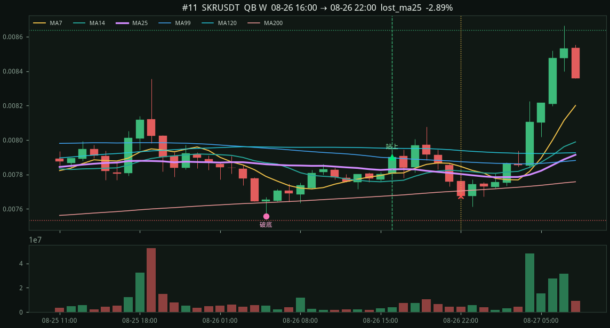
entry 0.03256 stop 0.0306777 (−5.78%) target 0.0363246 (2.0R) exit 0.0363246 target 破底 0.03077 深度 5.49% 在下 21h 量比 1.64x MA25 0.0320612
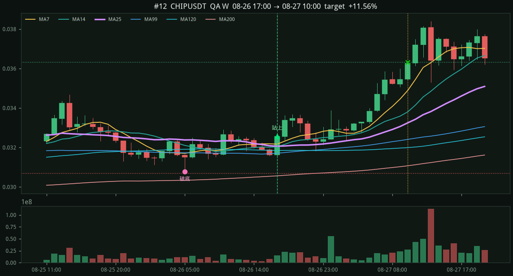
entry 1484.54 stop 1447.39 (−2.50%) target 1558.83 (2.0R) exit 1558.83 target 破底 1451.75 深度 3.56% 在下 23h 量比 8.81x MA25 1483.15
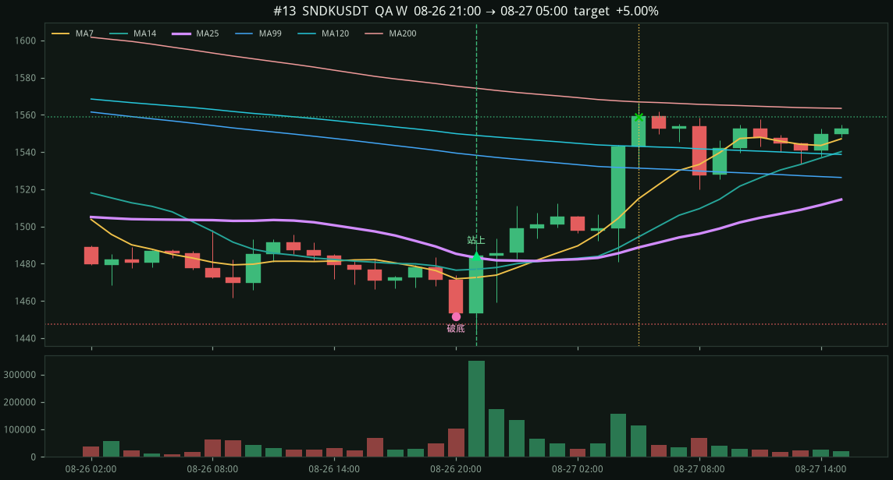
entry 12.89 stop 12.283 (−4.71%) target 14.1039 (2.0R) exit 14.1039 target 破底 12.32 深度 6.86% 在下 23h 量比 15.16x MA25 12.8364
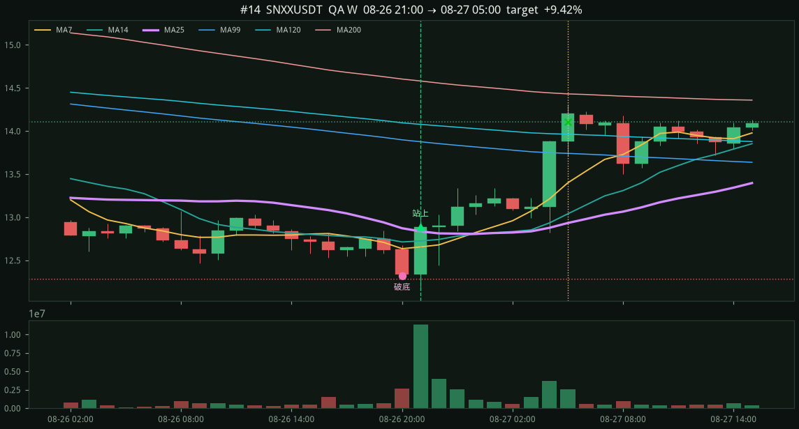
entry 81.48 stop 79.4111 (−2.54%) target 85.6179 (2.0R) exit 81.34 lost_ma25 破底 79.65 深度 6.51% 在下 33h 量比 3.05x MA25 81.0028
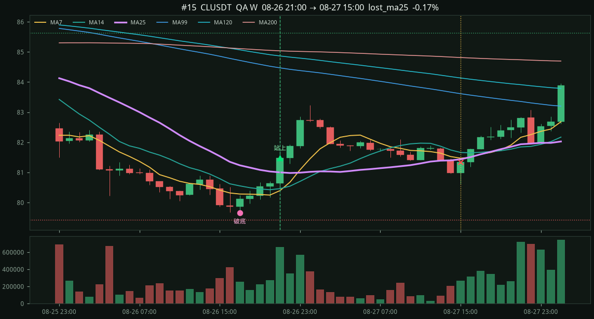
entry 0.007305 stop 0.00689027 (−5.68%) target 0.00813447 (2.0R) exit 0.00813447 target 破底 0.006911 深度 4.25% 在下 10h 量比 4.46x MA25 0.00715924
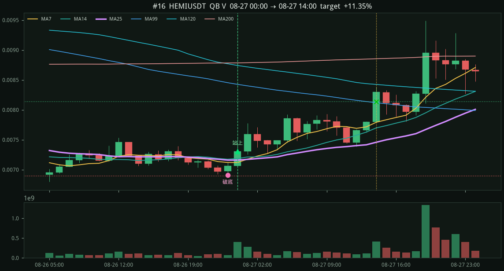
entry 2459.94 stop 2405.45 (−2.22%) target 2568.92 (2.0R) exit 2488.61 lost_ma25 破底 2412.69 深度 3.01% 在下 34h 量比 1.13x MA25 2454.76
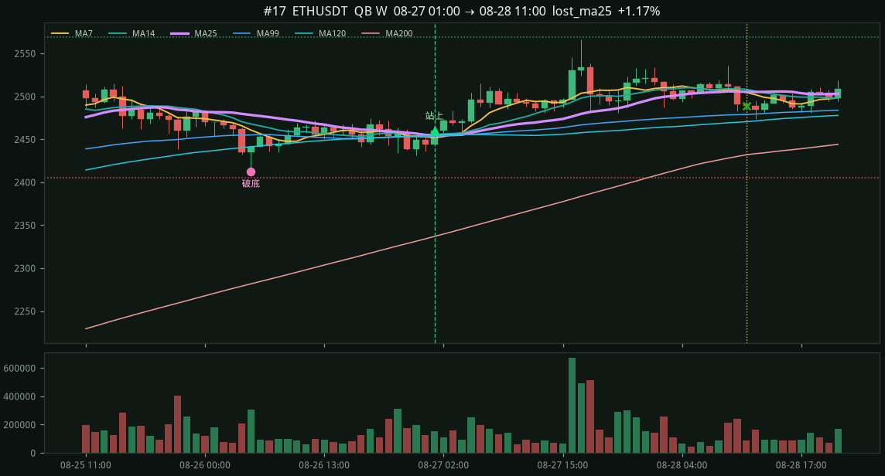
entry 785.23 stop 749.106 (−4.60%) target 857.478 (2.0R) exit 780.25 lost_ma25 破底 751.36 深度 10.28% 在下 31h 量比 0.72x MA25 780.781
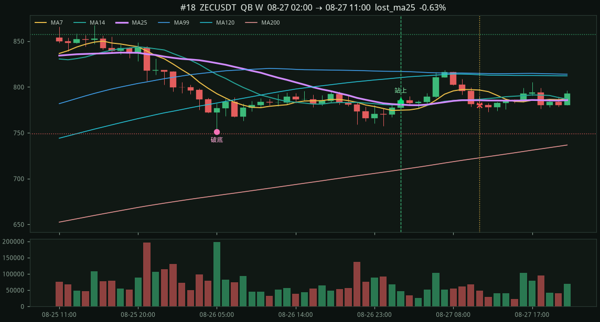
entry 3.317 stop 3.16079 (−4.71%) target 3.62942 (2.0R) exit 3.3316 lost_ma25 破底 3.1703 深度 8.07% 在下 25h 量比 0.66x MA25 3.3087
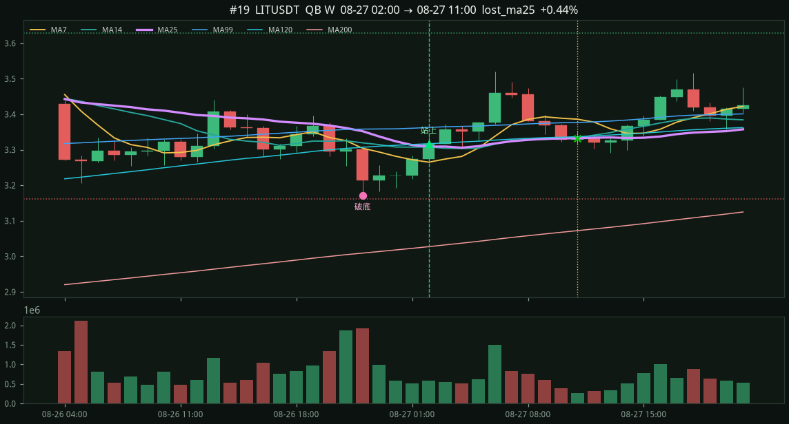
entry 8.22 stop 7.93612 (−3.45%) target 8.78776 (2.0R) exit 8.78776 target 破底 7.96 深度 3.94% 在下 30h 量比 1.19x MA25 8.2132
entry 88.27 stop 85.4529 (−3.19%) target 93.9043 (2.0R) exit 90.74 lost_ma25 破底 85.71 深度 3.27% 在下 28h 量比 1.44x MA25 87.5308
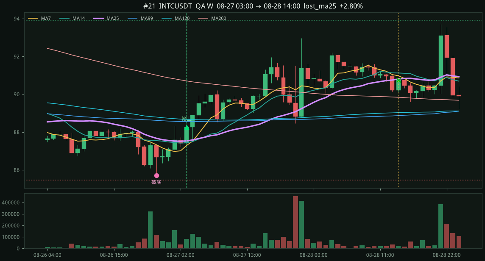
entry 1.905 stop 1.8265 (−4.12%) target 2.06199 (2.0R) exit 1.902 timeout 破底 1.832 深度 3.16% 在下 16h 量比 1.14x MA25 1.87896
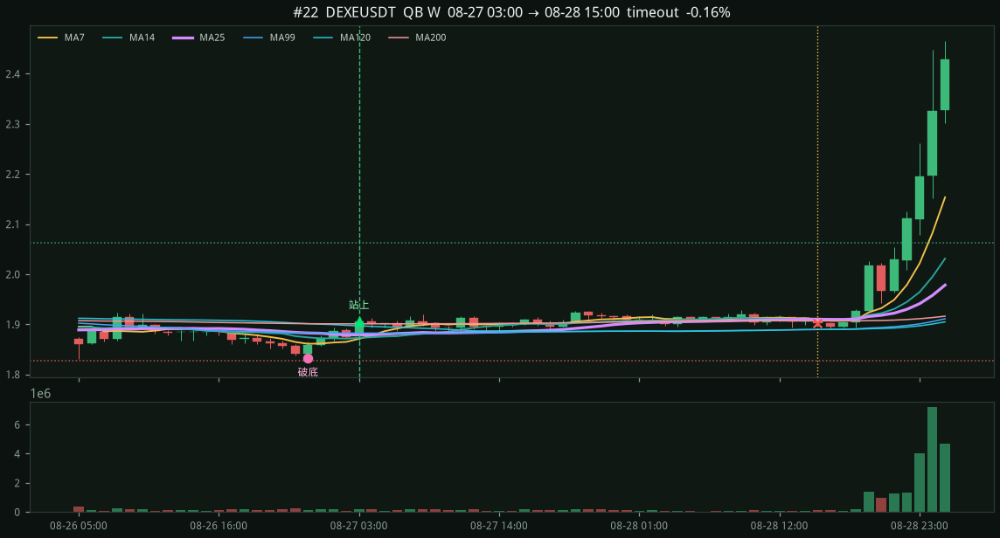
entry 4.08 stop 3.70984 (−9.07%) target 4.82033 (2.0R) exit 4.82033 target 破底 3.721 深度 11.94% 在下 20h 量比 0.18x MA25 4.07092
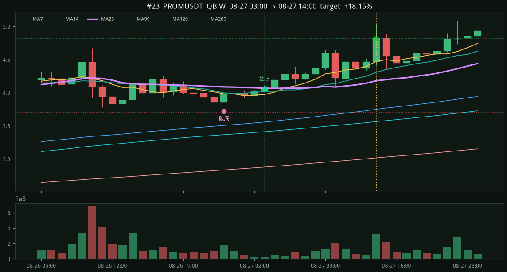
entry 357.01 stop 349.339 (−2.15%) target 372.352 (2.0R) exit 372.352 target 破底 350.39 深度 2.98% 在下 31h 量比 0.99x MA25 356.903
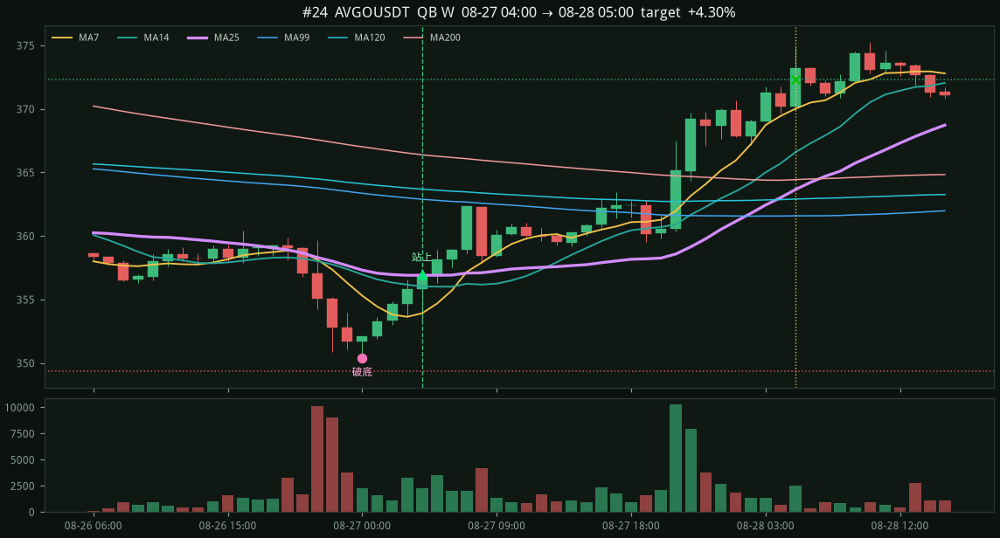
entry 96.88 stop 94.5355 (−2.42%) target 101.569 (2.0R) exit 101.569 target 破底 94.82 深度 4.40% 在下 31h 量比 0.58x MA25 96.7176
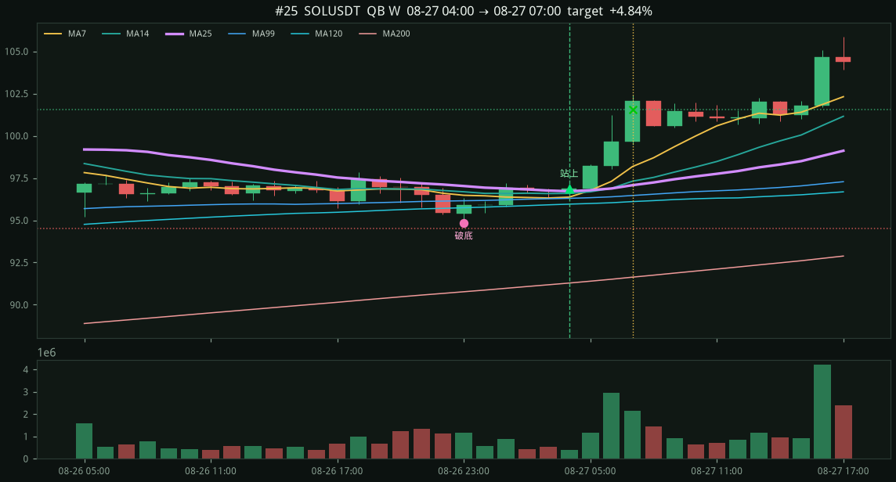
entry 4.274 stop 4.12259 (−3.54%) target 4.57681 (2.0R) exit 4.57681 target 破底 4.135 深度 5.00% 在下 27h 量比 0.34x MA25 4.2638
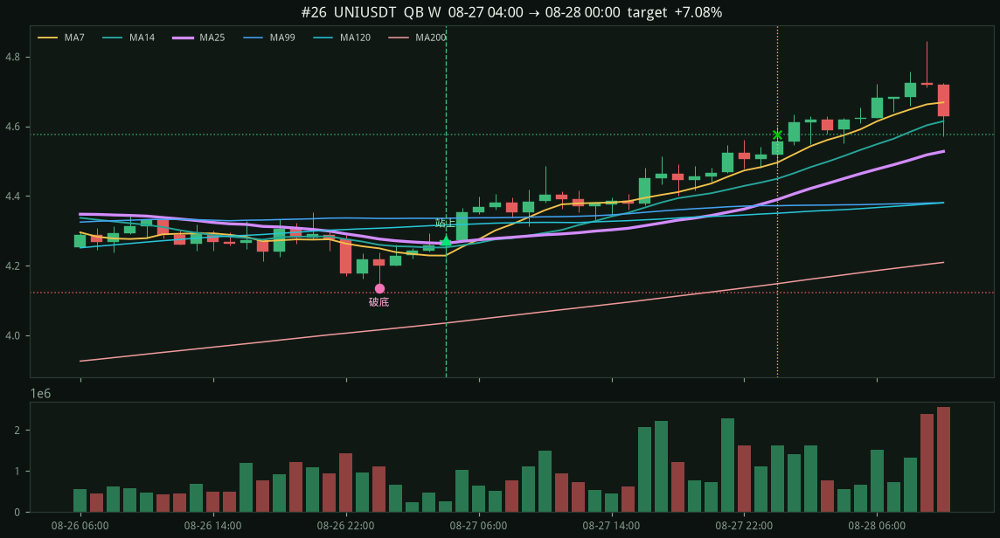
entry 0.7033 stop 0.676863 (−3.76%) target 0.756173 (2.0R) exit 0.7083 lost_ma25 破底 0.6789 深度 3.28% 在下 17h 量比 0.92x MA25 0.698376
entry 219.7 stop 213.139 (−2.99%) target 232.823 (2.0R) exit 221.28 lost_ma25 破底 213.78 深度 2.99% 在下 13h 量比 4.53x MA25 219.055
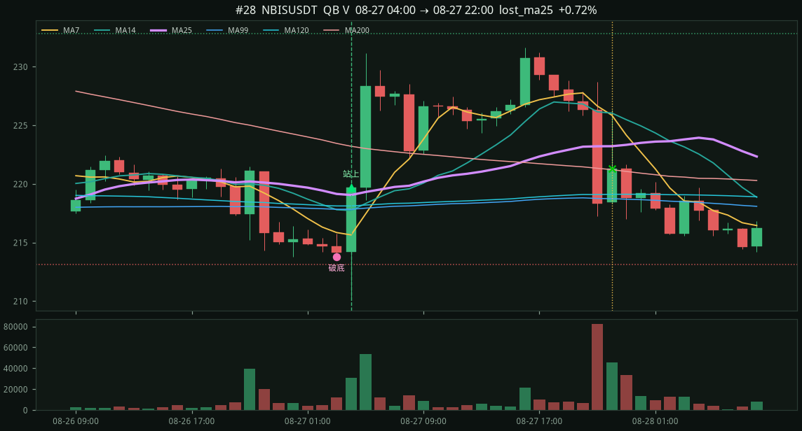
entry 218.84 stop 203.189 (−7.15%) target 250.143 (2.0R) exit 226.04 lost_ma25 破底 203.8 深度 4.49% 在下 10h 量比 10.13x MA25 213.068
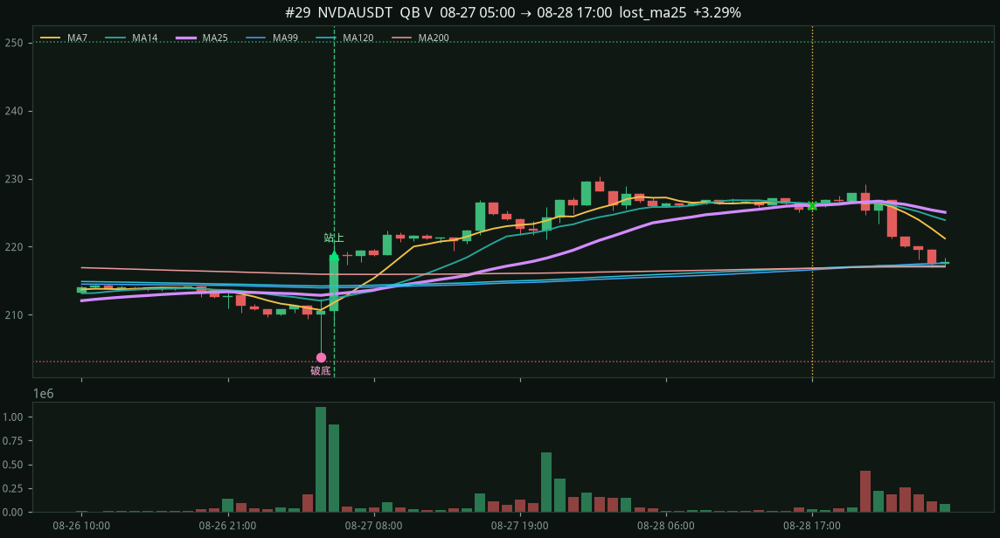
entry 0.009353 stop 0.00874768 (−6.47%) target 0.0105636 (2.0R) exit 0.009373 lost_ma25 破底 0.008774 深度 11.25% 在下 35h 量比 0.80x MA25 0.00931584
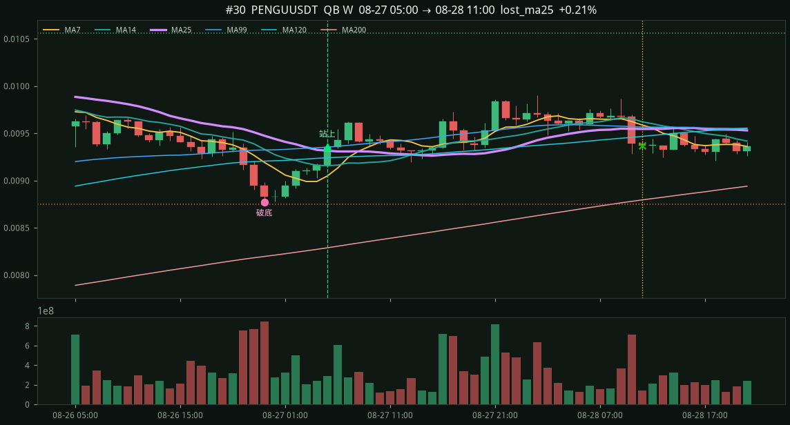
entry 125.01 stop 120.547 (−3.57%) target 133.935 (2.0R) exit 133.935 target 破底 120.91 深度 3.83% 在下 17h 量比 0.31x MA25 124.526
entry 440.59 stop 427.992 (−2.86%) target 465.786 (2.0R) exit 465.786 target 破底 429.28 深度 3.20% 在下 14h 量比 0.55x MA25 439.824
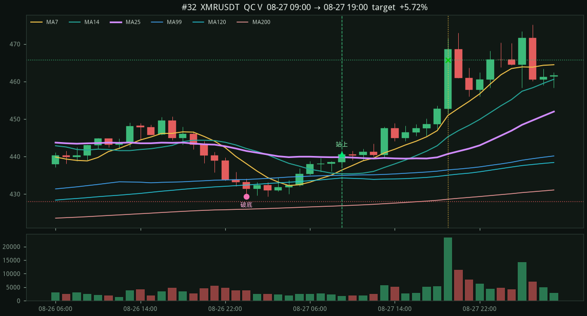
entry 0.8289 stop 0.6648 (−19.80%) target 1.1571 (2.0R) exit 1.1571 target 破底 0.6668 深度 6.58% 在下 14h 量比 23.14x MA25 0.70996
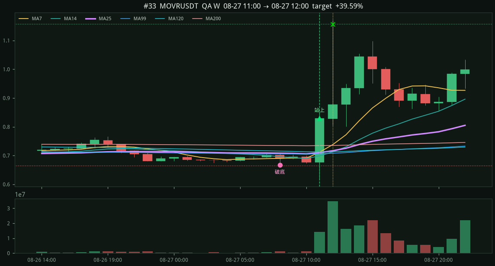
entry 90.44 stop 86.8487 (−3.97%) target 97.6227 (2.0R) exit 92.67 lost_ma25 破底 87.11 深度 4.71% 在下 19h 量比 0.13x MA25 90.2916
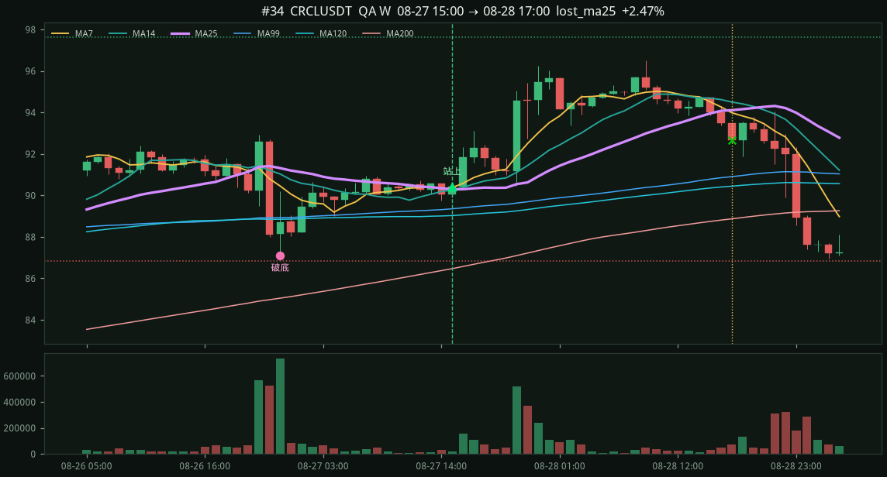
entry 0.033242 stop 0.028245 (−15.03%) target 0.043236 (2.0R) exit 0.043236 target 破底 0.02833 深度 23.89% 在下 22h 量比 0.66x MA25 0.0327268
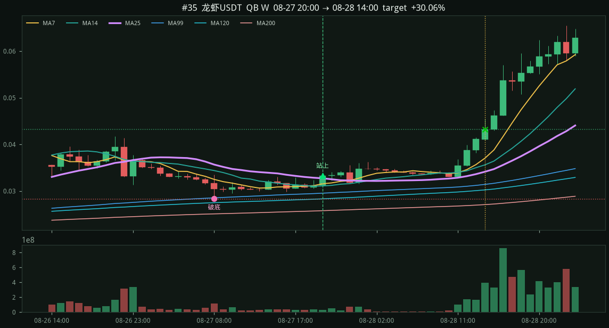
entry 47.22 stop 43.2698 (−8.37%) target 55.1204 (2.0R) exit 49.71 timeout 破底 43.4 深度 10.71% 在下 20h 量比 8.16x MA25 46.1592
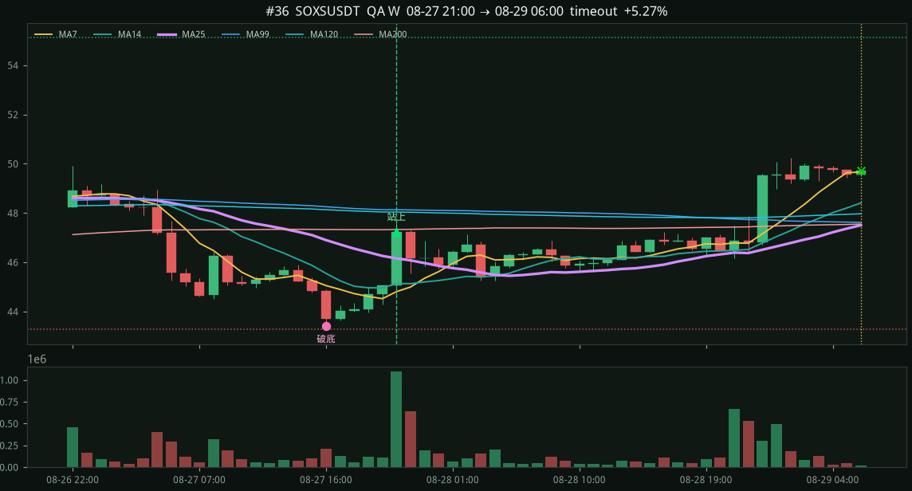
entry 0.02152 stop 0.0195312 (−9.24%) target 0.0254975 (2.0R) exit 0.0254975 target 破底 0.01959 深度 16.36% 在下 22h 量比 0.43x MA25 0.0214048
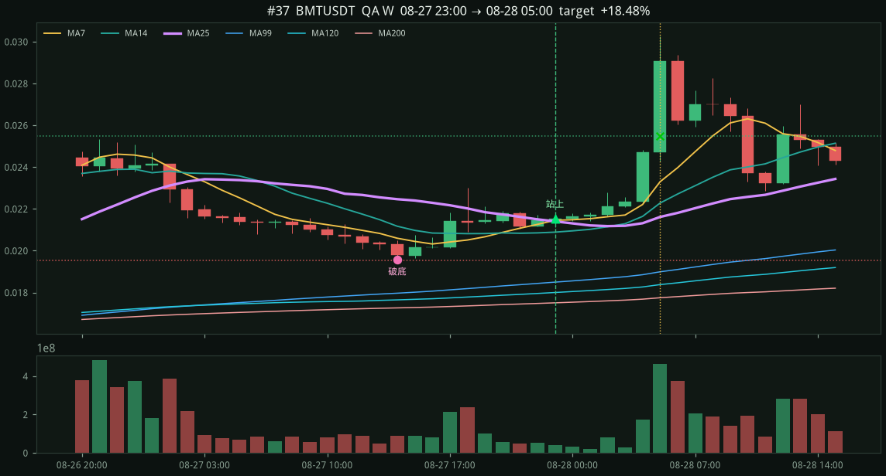
entry 0.06028 stop 0.0570384 (−5.38%) target 0.0667633 (2.0R) exit 0.0667633 target 破底 0.05721 深度 7.52% 在下 20h 量比 0.59x MA25 0.0601876
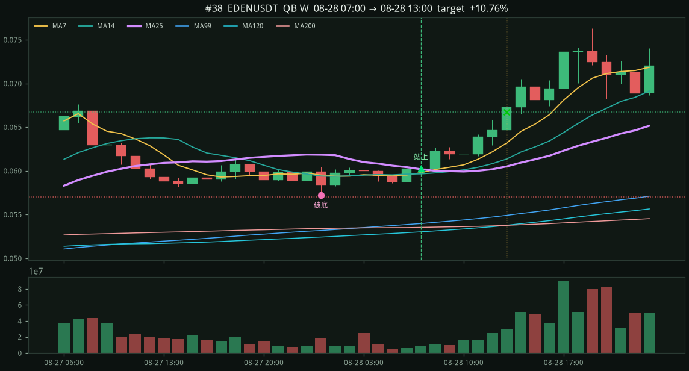
entry 923.52 stop 904.778 (−2.03%) target 961.005 (2.0R) exit 929.43 timeout 破底 907.5 深度 5.51% 在下 23h 量比 1.00x MA25 922.272
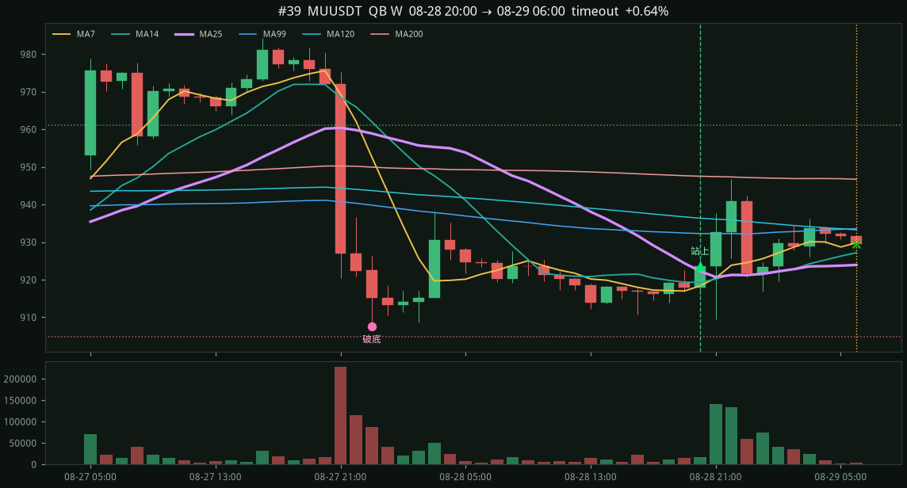
entry 21.21 stop 20.4285 (−3.68%) target 22.7729 (2.0R) exit 20.91 lost_ma25 破底 20.49 深度 4.84% 在下 23h 量比 0.82x MA25 21.1292
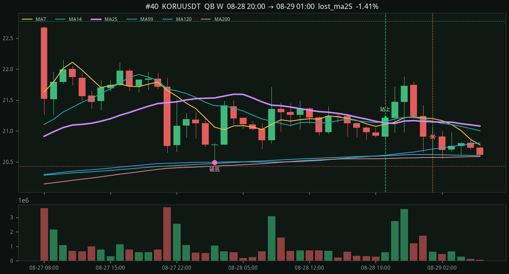
entry 28.6 stop 27.567 (−3.61%) target 30.6659 (2.0R) exit 28.99 timeout 破底 27.65 深度 10.64% 在下 23h 量比 1.70x MA25 28.5408
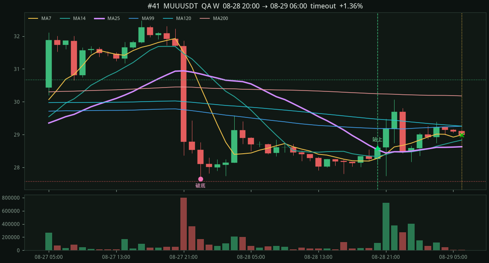
entry 1491.82 stop 1431.87 (−4.02%) target 1611.72 (2.0R) exit 1478.58 timeout 破底 1436.18 深度 6.38% 在下 24h 量比 9.66x MA25 1466.52
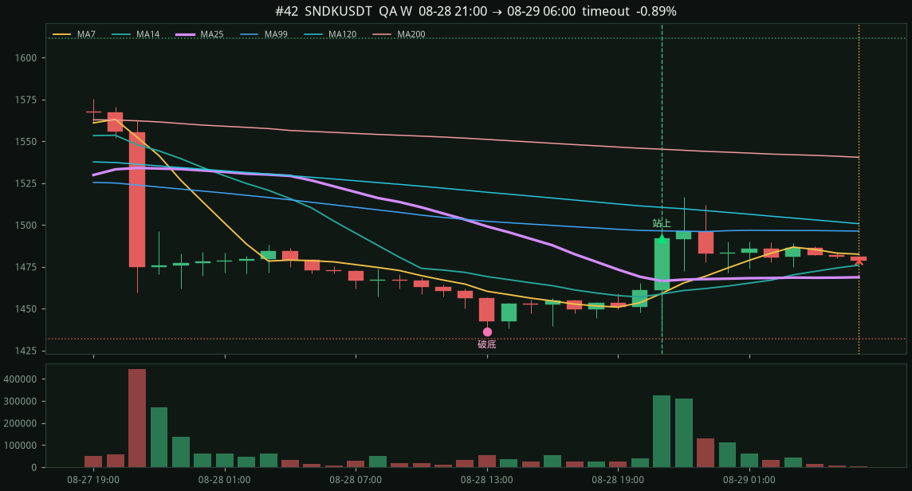
entry 161.18 stop 157.446 (−2.32%) target 168.648 (2.0R) exit 160.49 timeout 破底 157.92 深度 3.21% 在下 24h 量比 6.97x MA25 160.198
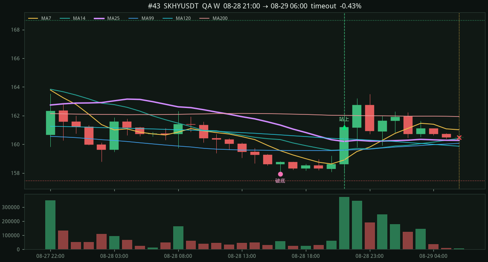
entry 12.98 stop 11.9939 (−7.60%) target 14.9522 (2.0R) exit 12.78 timeout 破底 12.03 深度 12.47% 在下 24h 量比 13.56x MA25 12.5408
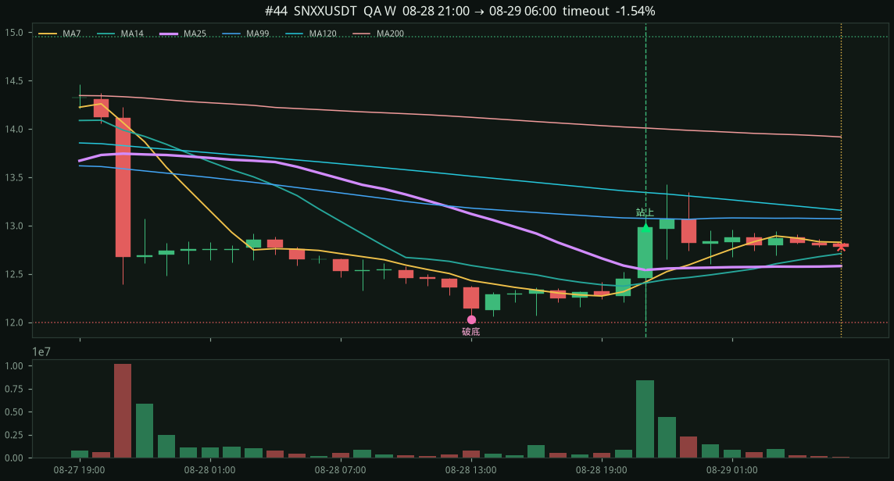
entry 801.47 stop 772.815 (−3.58%) target 858.781 (2.0R) exit 801.47 timeout 破底 775.14 深度 3.25% 在下 20h 量比 0.45x MA25 796.656
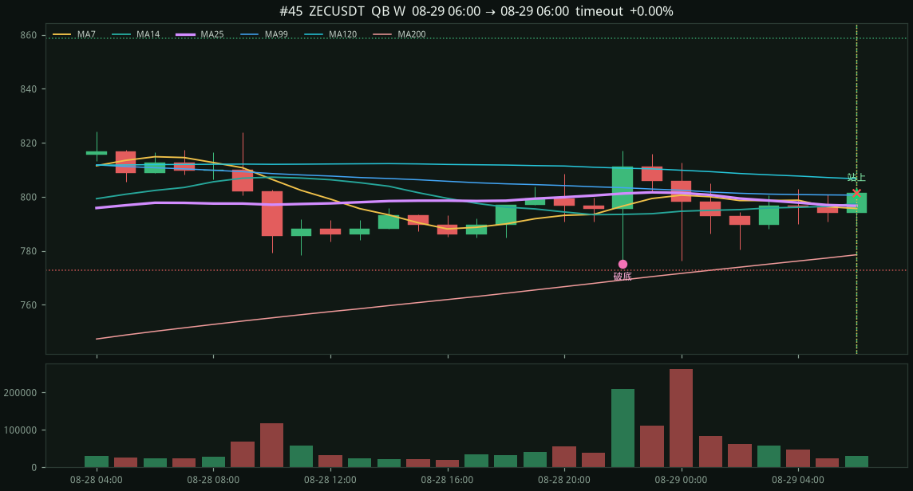
entry 49.3 stop 47.7862 (−3.07%) target 52.3276 (2.0R) exit 49.3 timeout 破底 47.93 深度 4.11% 在下 28h 量比 0.39x MA25 49.2456
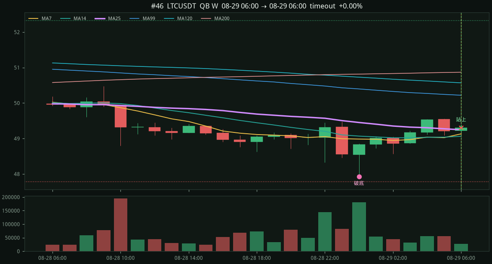
entry 0.7016 stop 0.663105 (−5.49%) target 0.778591 (2.0R) exit 0.7016 timeout 破底 0.6651 深度 6.61% 在下 28h 量比 0.84x MA25 0.697784
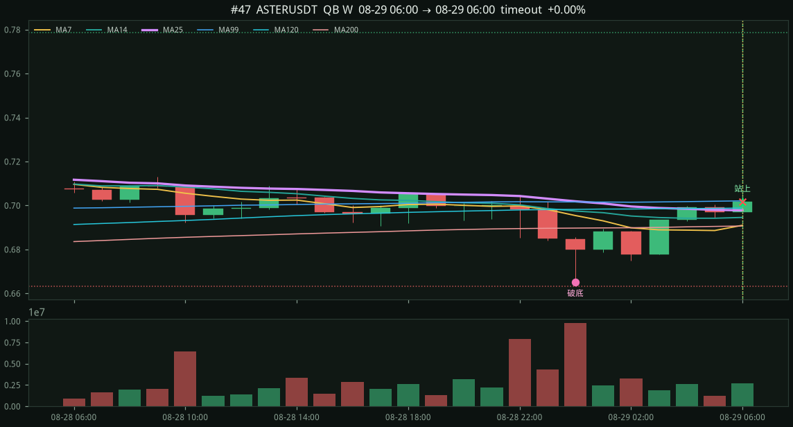